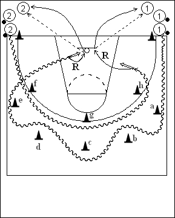

Catégorie : ECHAUFFEMENT (Ech-009)
Déroulement
- Deux files de joueurs aux extrémités d’une baseline. Les premiers joueurs des deux files possèdent un ballon. Deux séries de cônes : une de cinq cônes (a,b,c,d,e) un bon mètre au delà de la ligne des trois points, une autre de trois cônes (f,g,h) sur la ligne des trois points.
- Le premier joueur de la file 1 et le premier de la file 2 partent en même temps. Le premier joueur de la file 1 contourne en zig-zag les cônes a, b, c, d et e et termine par un lay-up. Le premier joueur de la file 2 passe derrière les cônes f, g et h et effectue un jump shoot.
- Chaque joueur réalise son rebond. Le premier joueur de la file 1 passe aux joueurs de la file 2 et va derrière cette file. Idem pour le premier joueur de la file 2 qui va en 1.
Coaching points
- Au fur et à mesure du drill, augmenter progressivement la vitesse des dribbles.
- Après un certain temps, inverser les rôles en demandant aux joueurs de la file 1 de passer derrière les cônes h, g et f et de prendre un jump shoot du côté gauche; demander aux joueurs de la file 2 de contourner en zig-zag les cônes e, d, c, b et a et de terminer par un lay-up à droite.